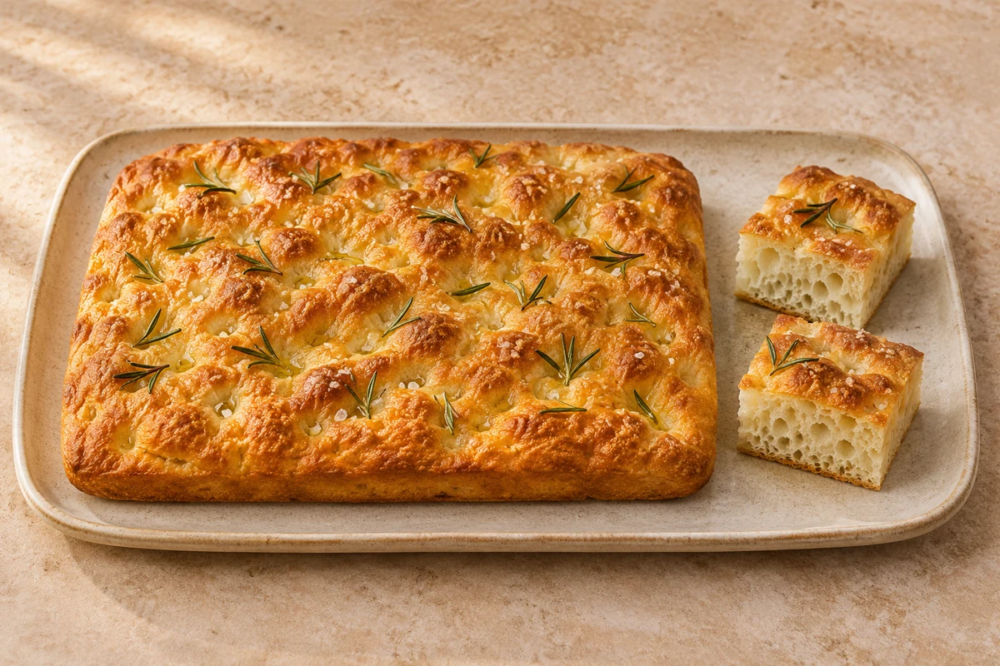

Bread
Rosemary Focaccia
Golden rosemary focaccia with olive oil, flaky sea salt and a soft, airy centre. Makes 1 loaf in a 25 × 35 cm tin.
Prep20 mins
Prove1 hr 35–45 mins
Bake20 mins
loaf
Ingredient quantities update automatically

Ingredients
Method
- Tip the flour into a large mixing bowl. Mix the yeast into one side of the flour and the fine sea salt into the other side.
- Then mix everything together. Keeping the salt and yeast separate at first avoids direct contact before mixing.
- Make a well in the middle of the flour and add 2 tbsp olive oil and 350–400 ml lukewarm water, adding the water gradually until you have a slightly sticky dough. You may not need all the water.
- Knead on a lightly floured work surface for 5–10 minutes until soft and less sticky, scraping all the dough out of the bowl. Put into a clean bowl, cover with a tea towel and leave to prove for 1 hour, until doubled in size.
- Oil a shallow rectangular tin (25 × 35 cm per loaf). Tip the dough onto the work surface, then stretch it to fill the tin. If making more than one loaf, divide between tins. Cover with a tea towel and leave to prove for another 35–45 minutes.
- Heat the oven to 220°C / 200°C fan / gas 7. Press your fingers into the dough to make dimples.
- Mix 1.5 tbsp olive oil with 1 tbsp water and the flaky sea salt, then drizzle over the bread. Push the rosemary sprigs into the dimples.
- Bake for 20 minutes until golden. While the bread is still hot, drizzle over 1–2 tbsp olive oil. Cut into squares and serve warm or cold with extra olive oil, if you like.